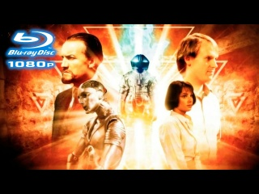
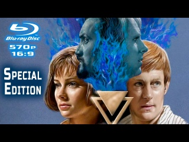
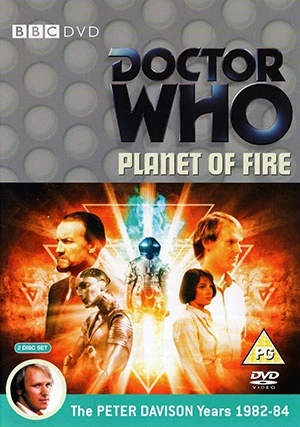
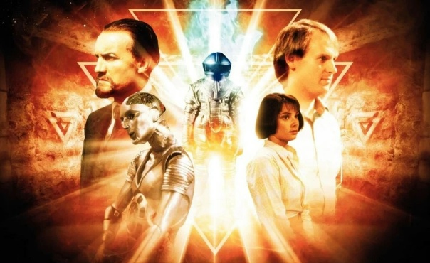
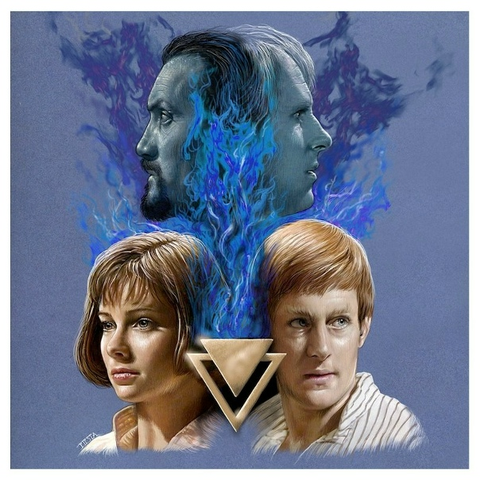

помощник
Субтитры: Русские и Английские |  |
|---|---|
с обновленными спецэффектами 16:9 (2010) + вступление от Фионы Камминг Субтитры: только Английские |  |
Planet of Fire
Дата выхода: 23 февраля - 2 марта 1984
Формат: 4 эпизода по 25 мин.
| | помощник |
ТАРДИС прибывает на Сарн — вулканическую планету, где немногочисленные колонисты поклоняются огню и ждут пришествия бога. Турлоу с удивлением узнаёт родной мир: он трионианец, а не землянин, а среди колонистов — его давно потерянный брат. Тем временем Мастер, уменьшенный до крошечных размеров после провала в «Воскрешении далеков», пытается вернуть себе нормальный рост с помощью энергии планеты. Он снова берёт Камелиона под контроль, и Доктору приходится уничтожить робота. Турлоу решает остаться с братом и покидает ТАРДИС, а его место занимает Пери.
Съёмки проходили на Лансароте — первый зарубежный локейшен в истории сериала. Макет города, где прячется маленький Мастер, переиспользовали из серии «Кастровальва».
 VHS - сентябрь 1998 |   DVD+Boxset - 14 июня 2010 |  Blu-ray - 16 марта 2026 * Версия в нашей группе |
|---|

